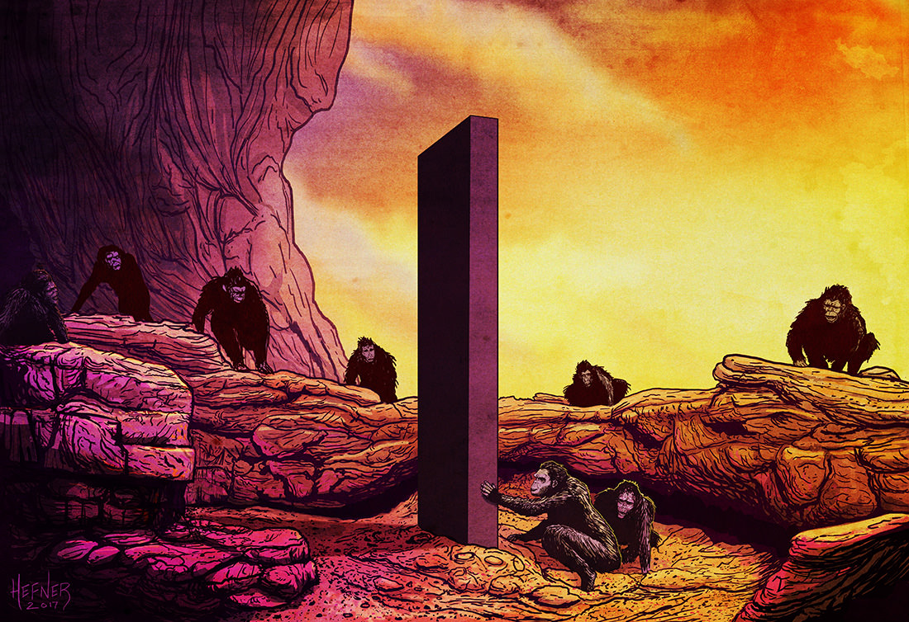

Halloween Origin
It is widely believed that many Halloween traditions originated from ancient Celtic harvest festivals, particularly the Gaelic festival Samhain; that such festivals may have had pagan roots; and that Samhain itself was Christianized as Halloween by the early Church.[12][13][14][15][16] Some believe, however, that Halloween began solely as a Christian holiday, separate from ancient festivals like Samhain.[17][18][19][20]
